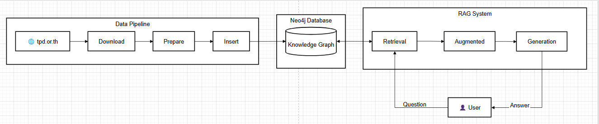
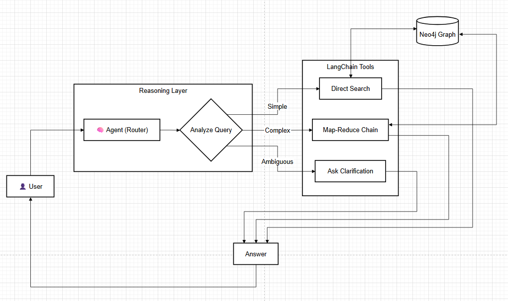

System Architecture Deep Dive & Agentic Evolution

Automated ingestion from TMT source.
Hybrid Search Architecture.
Defining what our current GraphRAG system can and cannot answer.
The current architecture suffers from significant latency in real-world usage and data inconsistencies.
Current limitations that lead to High Technical Debt and Brittle Logic.
Problem: User asks for "Usage" or "Side Effects", but our hardcoded logic only knows 4 specific categories.
Our current growth is limited by how fast we can write specialized Python rules. It's not just about Answer Quality, it's about Developer Velocity.
Current architecture suffers from significant latency in real-world usage.
LangChain is the Foundation for Scale and the Advance Design.
Chains.
Why shifting to LangChain isn't just about features, it's about Standardization.
❌ Pain Points: No standard interface, manual error handling, hard to swap components.
✅ Benefits: Type safety, interchangeable models (Ollama/OpenAI), built-in streaming.
Introducing LangChain to orchestrate reasoning and dynamic decision making.

Result: Response is slow and contains irrelevant manufacturer data.
Result: Fast, accurate, and 100% compliant with Data Privacy.
Combining the Security of Local AI with the Reasoning Power of Cloud AI.
Runs on RTX 4060 (Local)
Gemini 1.5 Pro / GPT-4o